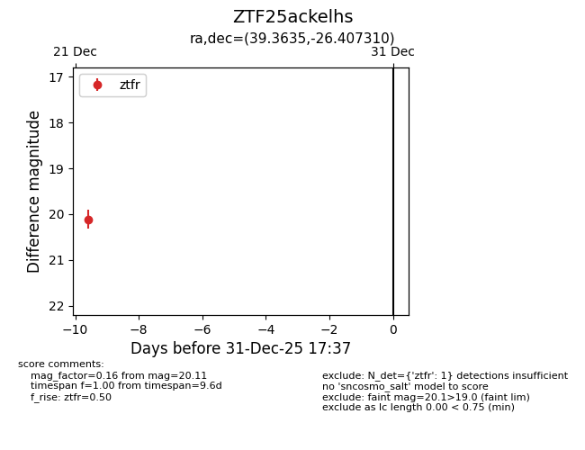
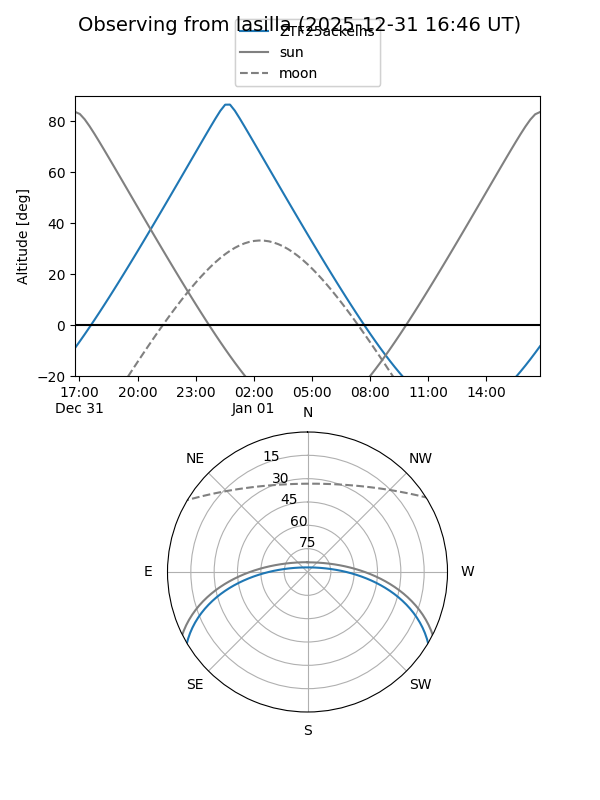

ZTF25ackelhs
Target ZTF25ackelhs at 2025-12-31 18:00
Aliases and brokers:
FINK: link
Lasair: link
ALeRCE: link
alt names
ZTF25ackelhs (ztf,fink_ztf)
Coordinates:
equatorial (ra, dec) = 39.3635,-26.40731
equatorial (HMS+DMS) = 02:37:27.25,-26:24:26.32
galactic (l, b) = (217.2727,-66.36893)
Flags:
Photometry:
last ztfr=20.11
1 ztfr detections
Lightcurve

Visibility


Additional plots